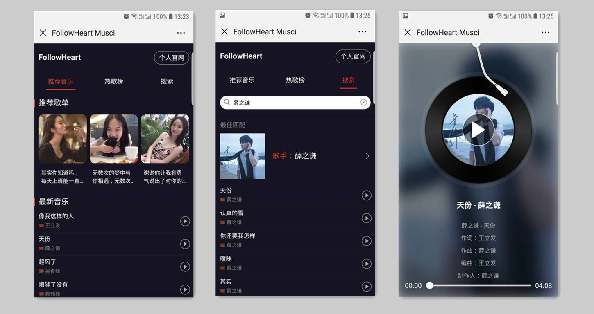
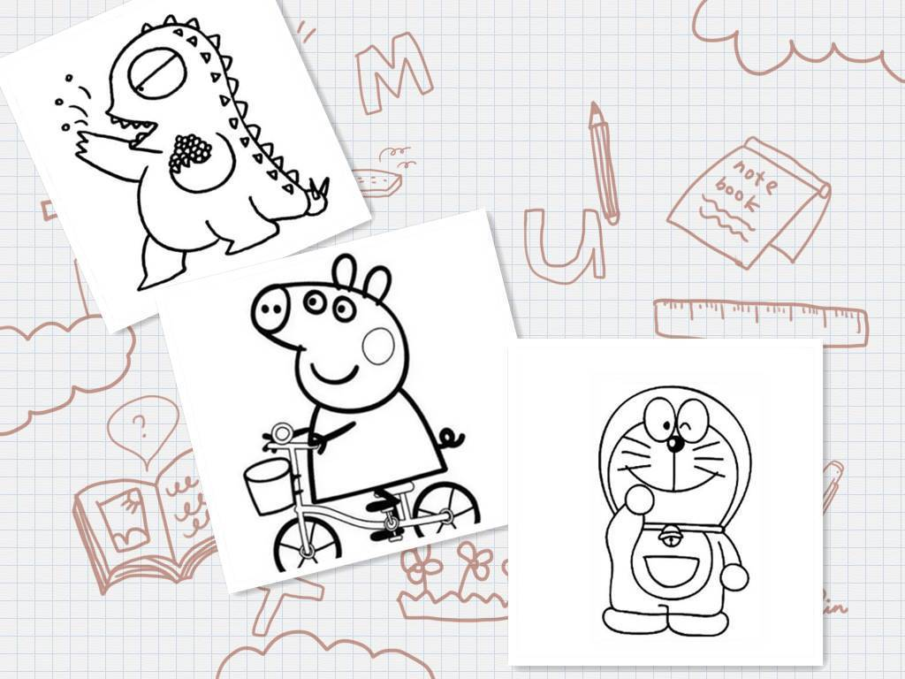

Portfolio
-
WheelUI框架

- WheelUI框架是一个使用vue配合es6和sass开发，使用Karma + Mocha做单元测试，最后通过npm发布和parcel打包的UI框架，官网是使用VuePress构建，目前已经实现了Button/Tabs/Input/Grid/Layout/Popover等常用组件，用户可以通过命令行npm install wang-test-1-1来安装使用它。
- 技术栈： Vue + Es6 + Sass + Npm + Karma + Mocha + Parcel + Svg + VuePress
- 这个项目作为自己的Vue的第一个实战项目，遇到了很多问题，中间我都有把各个组件实现的过程写在博客里： 链接博客专栏
- 由于刚开始接触vue相关，尤其对于单元测试不熟，所以中间有几个单元测试没有找到办法处理，个人认为对于vue造轮子项目最大的难点也就是各种单元测试的处理，以及你要有很好的js和css基本功。
- 在对vue文档看过之后已经自己亲自上手之后对vue的内容及项目中遇到的问题写了相关的参考笔记： 我的vue参考指南
Vue重构有赞商城移动端项目
- 使用vue对有赞商城移动端进行了重构，在原有的单页面应用基础上调整为多页面应用，主要实现了底部导航中的四个模块（首页、分类、购物车、我（这里面只是做了收货地址管理）），通过easymock使用mockjs模拟数据，然后通过axios来获取数据，其中在首页下拉的时候使用了mint-ui这个库，实现了当即将滚动至底部时自动加载更多数据，在收货地址管理这一模块使用了vue-router实现不同页面的跳转，以及使用了vuex实现了对删除、添加修改用户地址信息的操作，最后通过webpack打包上线。
- 技术栈： Vue + Vue Router + + Vue-cl + Vuex + Mockjs + Axios + Mint-UI + Webpack
- 这个项目因为使用的模拟数据所以一些数据的增删改功能可能会有问题，而在这个项目的过程中遇到的主要问题就是购物车那一模块的选中店铺和选中商品的处理，当然具体实现和问题博客里都有说到：购物车的实现
- 另外通过这个项目让我对响应式原理有了更深入的认识，因为需要对我模拟的数据进行属性的添加，所以我不能先把我拿到的数据直接赋值给vue实例，因为这样的话不会是响应式的，所以我需要对原始数据先操作进行属性的添加然后再赋值给vue实例：深入理解响应式原理案例
- JS Try it Github
Vue搭建cnode社区
- 使用cnode社区官方给的api接口，通过vue/vue-router/vue-cli对cnode社区进行重构，主要包括首页，用户列表页以及文章列表页。
- 技术栈：Vue + Axios + Jquery + Webpack + Npm + Vue-cli + Vue-router + Es6
- 在项目过程中通过Vue-router实现路由切换功能，使用v-for实现了数据的遍历，用router-view来控制页面显示，因为其中有一个页面（Article组件）点击链接之后，页面的url只有参数发生变化，导致页面不会跳转，最后用了watch方法来监听路由，才解决这个bug。
- JS Try it Github
微信小程序项目：立发翻译
- 立发翻译是一款翻译的微信小程序，可以在语言页面选择所需翻译的语种，并且翻译过后会在历史页面保留你的历史数据，而且点击历史记录的所需翻译会跳转到翻译页面翻译当前语种，方便下次查找，整个工具主要是根据小程序技术文档来写的。
- 技术栈：百度api + iconfont + JavaScript + Promise + md5加密 + WXML + WXSS + wx.request + wx.showToast + wx.switchTab
- 作为小程序的第一个项目，虽然页面结构比较简单，但还是用到了不少的api，中间遇到的问题和具体实现请看：翻译小程序的实现
- 在这个项目过程中，由于没有后台，且需要一个翻译api，所以最后选择了百度翻译api，在这个过程中我看了百度翻译api使用文档，其中需要用到md5加密，然后就是在项目中，比较关键的一点是无论在语言页面还是历史页面都需要有一个缓存的数据，然后就用到了wx.setStorageSync、wx.getStorageSync这两个方法。
- 查看效果可以在微信小程序处搜索立发翻译，或者扫描小程序码
- JS Try it Github
原生js音乐播放器
html5 canvas画板
- 使用h5中的canvas，配合js实现一个集画笔颜色、画笔粗细、橡皮擦、清空、和保存功能的花板，通过touch事件使手机也可以使用。
- 技术栈：html5 Canvas + Js
- 在做canvas画板过程中遇到的问题及使用的知识点请移步到博客：canvas画布初体验
- JS Try it Github
Bootstrap项目：24预科官网

- 这个是一个留学项目的官网，里面还包括各个院校的留学官网已经各个项目的专题页，整个网站至少有四五十个页面，所有的页面从页面设计到代码上线都是我一人完成。其中一级栏目使用了bootstrap做了响应式布局，使手机和pc端可以访问到各自适合的布局页面，中间各院校页是针对pc和移动端分别做了两套页面，移动端使用了adaptive.js这个库，然后配合rem做的移动端适配，轮播图是使用了swiper，再就是各院校页面都是用的sass写的css。
- 技术栈：Bootstrap + Sass + Adaptive.js + Jquery
- 这是第一次使用Bootstrap做一个这么多页面的网站，因为Bootstrap本身有一些特殊的分辨率没有处理好，所以在这些特殊的分辨率下可能会布局结构有些问题，为了项目尽快上线我对常用的pc和移动端的不同分辨率写了媒体查询来是大多数用户可以正常浏览。
- JS Try it